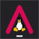
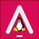
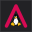
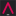

brand assets / selected mark
aa-linux
R1 / Rounded A + Tux
The selected mark combines the rounded A-shaped road, the real Tux mascot, and the terminal cursor. This page collects the primary mark and the practical derivatives for favicons, repository avatars, and lockups.



Variations
Use the primary mark wherever the badge has room. The icon drops the cursor for small favicons. The badge variant rounds the outer square for app-icon and avatar surfaces.


Icon
favicon


App icon
rounded badge


Inverse
red surface


Transparent mark
dark surfaces

A-only fallback
16px


Lockup
The horizontal lockup pairs the primary mark with an outlined DejaVu Sans Mono Bold wordmark. The wordmark is converted to paths, so the file does not depend on a system font.


Color
The primary accent is Debian red. The deeper red is available for borders and darker surfaces. Tux keeps its original black, white, and amber artwork.
Debian red#D70A53
Deep red#A80030
Surface#222225
Foreground#E8E9ED
Tux white#FFFFFF
Tux black#111319
Tux amber#E5C07B
Frame line#3F3F44
Sizing
Use 64px or larger when Tux details matter. The icon works at 32px; below that, switch to the A-only fallback.

32 icon
16 A-onlyClear space: at least 8 units on a 64-unit artboard (12.5%). Keep other marks and text outside the dashed line.
Usage
Do
- Use the primary mark on dark or light surfaces.
- Use the icon for favicons and the badge for avatars.
- Keep Tux in the original black, white, and amber.
- Keep the 12.5% clear space.
- Use the lockup when the project name is not already adjacent.
- Use the A-only fallback below 32px.
Don't
- Recolor Tux or flatten it into the red A.
- Add gradients, shadows, or outlines to the red A.
- Rotate, skew, or stretch the mark.
- Use the Debian swirl or imply Debian affiliation.
- Imply Google or Android Auto endorsement.
- Use the detailed primary mark below 32px.
Downloads
SVG is the source format. PNG exports are included for favicons and avatar surfaces.
| Asset | Format | Files | Use |
|---|---|---|---|
| Primary | SVG + PNG | SVG · 512 · 128 · 32 | Primary mark, 64px+ |
| Icon | SVG + PNG | SVG · 32 · 16 | Favicon, 32px |
| App icon | SVG + PNG | SVG · 512 · 128 | Repository avatar, launcher |
| Inverse | SVG + PNG | SVG · 512 | Red surface |
| Transparent mark | SVG + PNG | SVG · 512 | Dark surfaces |
| A-only fallback | SVG + PNG | SVG · 512 · 32 · 16 | 16px favicon |
| Lockup, dark | SVG + PNG | SVG · 864 | Project header, dark |
| Lockup, light | SVG + PNG | SVG · 864 | Project header, light |